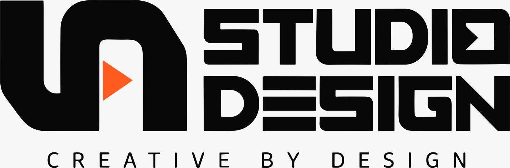

Encontre sua direção
Busque uma técnica ou navegue pelas categorias.

Menos tentativa. Mais direção criativa.
Encontre técnicas, combine estilos e transforme sua ideia em um prompt pronto para criar.
Busque uma técnica ou navegue pelas categorias.
Descreva sua ideia, escolha formato e ferramenta e combine até quatro códigos.
Leve o prompt completo para a ferramenta de IA que você usa.
Tente outra palavra ou limpe os filtros para explorar a coleção.
Os códigos são atalhos descritivos de técnicas, não comandos oficiais das ferramentas de IA. Copie o prompt completo. Resultados variam conforme a ferramenta. Sua ideia e seus favoritos ficam apenas neste navegador.